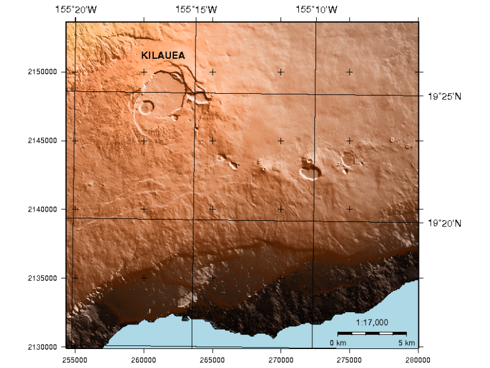

GMT¶
De generiska kartläggningsverktygen¶
GMT är en samling verktyg som gör det möjligt för användare att manipulera (x,y) och (x,y,z) datauppsättningar (inklusive filtrering, trendanpassning, rutnät, projicering etc.) och producera EPS-illustrationer (Encapsulated PostScript File) som sträcker sig från enkla x-y-plottar via konturkartor till artificiellt belysta ytor och 3D-perspektivvyer i svartvitt, gråton, hachure-mönster och 24-bitars färg.
GMT stöder många vanliga kartprojektioner samt linjär, logaritmisk och potensskalning, och levereras med stöddata som kustlinjer, floder och politiska gränser.
{kind=link}
Kärnfunktioner¶
Journal kvalitet kartografi.
Funktioner för rutnät och konturering.
Detaljer¶
Webbplats: https://www.generic-mapping-tools.org
Licence: GNU General Public License (GPL) version 2
Programvaruversion: 6.5.0
Plattformar som stöds: GNU/Linux, Mac OSX, MS Windows
API-gränssnitt: Kommandorad
Support: https://forum.generic-mapping-tools.org/
Observera
Detta projekt ingår endast på OSGeoLives virtuella maskindisk (VMDK)